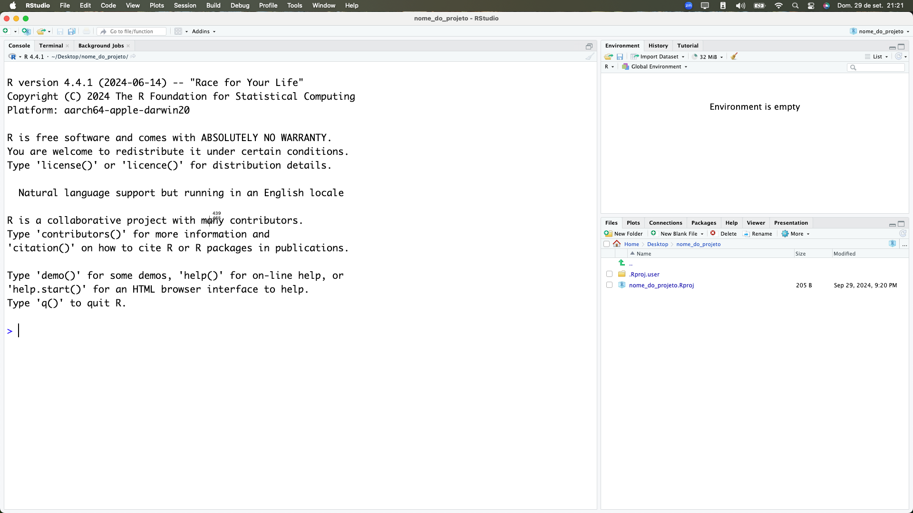

dir.create("dados")3 Análise exploratória de dados - Parte 1
Nesta aula, vamos conhecer algumas funções do R e do pacote tidyverse que nos ajudam a fazer uma análise exploratória dos dados.
Dados
Utilizaremos dados de saneamento por municipio do estado de São Paulo, disponibilizados pela CETESB1, referente à 2022.
O arquivo csv pode ser baixado através deste link.
Esses dados foram originalmente disponibilizados em PDF, e foram extraídos e organizados por Beatriz Milz.
3.1 Criando um projeto
O RStudio possui uma funcionalidade chamada projetos. Quando criamos um projeto no RStudio, uma nova pasta é criada no computador, e o RStudio define essa pasta como o diretório de trabalho. Além disso, o RStudio também cria um arquivo com a extensão .Rproj dentro dessa pasta, que contém informações sobre o projeto.
É recomendado que sempre trabalhemos em projetos no RStudio, pois isso facilita a organização dos arquivos e a reprodução do código.
É recomendado também salvar os arquivos referentes ao projeto (como scripts, bases de dados, resultados, etc) dentro do projeto. Isso não significa que precisamos colocar todos os arquivos dentro da pasta principal do projeto: podemos criar sub-pastas para organizar os arquivos.
Para criar um projeto no RStudio, primeiro precisamos acessar o menu de criação de projetos (New project Wizard). Podemos fazer isso de três formas:
No menu superior, clicando em
File > New Project...Clicando no ícone de novo projeto na barra de ferramentas do RStudio:

No canto superior esquerdo, clicando no botão referente à projetos, e depois em
New Project...:
Depois, escolhemos o tipo de projeto que queremos criar. No geral, escolhemos a opção New Directory, para criar uma nova pasta no computador:

Depois, escolhemos o tipo de projeto que queremos criar. Cada tipo de projeto apresenta arquivos específicos de template. O RStudio apresenta algumas opções de projeto, porém é possível adicionar novos tipos de projeto instalandos pacotes específicos.
No geral, escolhemos a opção New Project, para criar um projeto simples:

Na tela seguinte, precisamos informar o nome do projeto (no campo Directory name) e o diretório onde ele será criado (no campo Create project as subdirectory of):

Após preencher as informações solicitadas, clicamos em Create Project. O RStudio criará o projeto e o abrirá:

Dica
Note que o nome do projeto que criamos aparece no canto superior direito do RStudio.
3.2 Salvando os dados no projeto
Para facilitar o trabalho, vamos salvar os dados que utilizaremos nesta aula dentro do projeto que acabamos de criar.
Primeiro, vamos criar uma pasta chamada dados dentro do projeto:
Depois, vamos baixar os dados da CETESB e salvar na pasta dados que acabamos de criar:
download.file(
url = "https://raw.githubusercontent.com/beatrizmilz/cetesb_saneamento/refs/heads/main/data-raw/dados-cetesb-tidy/2022.csv",
destfile = "dados/dados-cetesb-2022.csv"
)Confira se o arquivo foi baixado corretamente, e se está na pasta dados do projeto.
3.3 Importando os dados
Para importar os dados que acabamos de baixar, vamos utilizar a função read_csv() do pacote readr, que faz parte do tidyverse.
Lembre-se de carregar o pacote tidyverse antes de utilizar a função read_csv():
library(tidyverse)── Attaching core tidyverse packages ──────────────────────── tidyverse 2.0.0 ──
✔ dplyr 1.1.4 ✔ readr 2.1.5
✔ forcats 1.0.0 ✔ stringr 1.5.1
✔ ggplot2 3.5.2 ✔ tibble 3.3.0
✔ lubridate 1.9.4 ✔ tidyr 1.3.1
✔ purrr 1.0.4
── Conflicts ────────────────────────────────────────── tidyverse_conflicts() ──
✖ dplyr::filter() masks stats::filter()
✖ dplyr::lag() masks stats::lag()
ℹ Use the conflicted package (<http://conflicted.r-lib.org/>) to force all conflicts to become errorsAgora, podemos importar os dados:
dados_cetesb <- read_csv("dados/dados-cetesb-2022.csv")Rows: 645 Columns: 12
── Column specification ────────────────────────────────────────────────────────
Delimiter: ","
chr (2): uf, municipio
dbl (10): ano, ugrhi, codigo_ibge, populacao_urbana, atendimento_coleta_porc...
ℹ Use `spec()` to retrieve the full column specification for this data.
ℹ Specify the column types or set `show_col_types = FALSE` to quiet this message.Vamos conferir se os dados foram importados corretamente, utilizando a função glimpse():
glimpse(dados_cetesb)Rows: 645
Columns: 12
$ ano <dbl> 2022, 2022, 2022, 2022, 2022, 2022, 2022…
$ uf <chr> "SP", "SP", "SP", "SP", "SP", "SP", "SP"…
$ ugrhi <dbl> 1, 1, 1, 2, 2, 2, 2, 2, 2, 2, 2, 2, 2, 2…
$ municipio <chr> "Campos do Jordão", "Santo Antônio do Pi…
$ codigo_ibge <dbl> 3509700, 3548203, 3548609, 3502507, 3503…
$ populacao_urbana <dbl> 52384, 4067, 5251, 35684, 1844, 2619, 88…
$ atendimento_coleta_porc <dbl> 52.6, 46.7, 98.0, 70.0, 95.6, 100.0, 88.…
$ atendimento_tratamento_porc <dbl> 100.0, 100.0, 100.0, 0.0, 95.6, 0.0, 100…
$ eficiencia <dbl> 93.0, 80.0, 91.3, 0.0, 99.0, 0.0, 75.0, …
$ carga_poluidora_potencial <dbl> 2829, 220, 284, 1927, 100, 141, 476, 442…
$ carga_poluidora_remancescente <dbl> 1445, 138, 30, 1927, 9, 141, 161, 1858, …
$ ictem <dbl> 5.97, 4.63, 9.97, 1.55, 9.86, 1.50, 7.61…A função View() também pode ser utilizada para visualizar os dados em uma tabela interativa:
View(dados_cetesb)3.4 Conhecendo a base de dados
Para conhecer melhor a base de dados, podemos utilizar algumas funções para explorar as colunas e os tipos de dados.
A função nrow() nos mostra o número de linhas da base de dados, e a função ncol() nos mostra o número de colunas:
nrow(dados_cetesb)[1] 645ncol(dados_cetesb)[1] 12A função colnames() nos mostra os nomes das colunas:
colnames(dados_cetesb) [1] "ano" "uf"
[3] "ugrhi" "municipio"
[5] "codigo_ibge" "populacao_urbana"
[7] "atendimento_coleta_porc" "atendimento_tratamento_porc"
[9] "eficiencia" "carga_poluidora_potencial"
[11] "carga_poluidora_remancescente" "ictem" Segue abaixo uma tabela com os nomes das colunas e suas descrições2:
| Nome da coluna | Descrição |
|---|---|
| ano | Ano de referência dos dados |
| uf | Unidade da Federação (estado) |
| ugrhi | Unidade de Gerenciamento de Recursos Hídricos |
| municipio | Nome do município |
| codigo_ibge | Código do município no IBGE |
| populacao_urbana | População urbana do município |
| atendimento_coleta_porc | Percentual de atendimento da coleta de esgoto |
| atendimento_tratamento_porc | Percentual de atendimento do tratamento de esgoto, para o esgoto coletado |
| eficiencia | Eficiência do sistema de esgoto |
| carga_poluidora_potencial | Carga poluidora potencial do esgoto coletado |
| carga_poluidora_remancescente | Carga poluidora remanescente do esgoto coletado |
| ictem | Indicador de Coleta e Tratabilidade de Esgoto da População Urbana de Município (ICTEM) |
A função head() nos mostra as primeiras linhas da base de dados, e a função tail() nos mostra as últimas linhas:
head(dados_cetesb)# A tibble: 6 × 12
ano uf ugrhi municipio codigo_ibge populacao_urbana
<dbl> <chr> <dbl> <chr> <dbl> <dbl>
1 2022 SP 1 Campos do Jordão 3509700 52384
2 2022 SP 1 Santo Antônio do Pinhal 3548203 4067
3 2022 SP 1 São Bento do Sapucaí 3548609 5251
4 2022 SP 2 Aparecida 3502507 35684
5 2022 SP 2 Arapeí 3503158 1844
6 2022 SP 2 Areias 3503505 2619
# ℹ 6 more variables: atendimento_coleta_porc <dbl>,
# atendimento_tratamento_porc <dbl>, eficiencia <dbl>,
# carga_poluidora_potencial <dbl>, carga_poluidora_remancescente <dbl>,
# ictem <dbl>tail(dados_cetesb)# A tibble: 6 × 12
ano uf ugrhi municipio codigo_ibge populacao_urbana
<dbl> <chr> <dbl> <chr> <dbl> <dbl>
1 2022 SP 22 Rosana 3544251 12828
2 2022 SP 22 Sandovalina 3545506 3074
3 2022 SP 22 Santo Anastácio 3547700 19434
4 2022 SP 22 Taciba 3552908 5410
5 2022 SP 22 Tarabai 3553906 7035
6 2022 SP 22 Teodoro Sampaio 3554300 18996
# ℹ 6 more variables: atendimento_coleta_porc <dbl>,
# atendimento_tratamento_porc <dbl>, eficiencia <dbl>,
# carga_poluidora_potencial <dbl>, carga_poluidora_remancescente <dbl>,
# ictem <dbl>A função summary() nos mostra um resumo de estatísticas descritivas para todas as colunas. Mas cuidado: nem todos os resultados fazem sentido (exemplo: a coluna codigo_ibge é um identificador, e não devemos calcular estatísticas descritivas para ela).
summary(dados_cetesb) ano uf ugrhi municipio
Min. :2022 Length:645 Min. : 1.00 Length:645
1st Qu.:2022 Class :character 1st Qu.: 7.00 Class :character
Median :2022 Mode :character Median :13.00 Mode :character
Mean :2022 Mean :12.38
3rd Qu.:2022 3rd Qu.:17.00
Max. :2022 Max. :22.00
codigo_ibge populacao_urbana atendimento_coleta_porc
Min. :3500105 Min. : 653 Min. : 12.80
1st Qu.:3514601 1st Qu.: 4498 1st Qu.: 88.30
Median :3528700 Median : 11524 Median : 98.70
Mean :3528698 Mean : 69406 Mean : 91.06
3rd Qu.:3543204 3rd Qu.: 39045 3rd Qu.:100.00
Max. :3557303 Max. :12284940 Max. :100.00
atendimento_tratamento_porc eficiencia carga_poluidora_potencial
Min. : 0.00 Min. : 0.00 Min. : 35
1st Qu.:100.00 1st Qu.:74.97 1st Qu.: 243
Median :100.00 Median :83.45 Median : 622
Mean : 89.73 Mean :77.04 Mean : 3748
3rd Qu.:100.00 3rd Qu.:88.80 3rd Qu.: 2108
Max. :100.00 Max. :99.10 Max. :663387
NA's :5 NA's :5
carga_poluidora_remancescente ictem
Min. : 1.0 Min. : 0.75
1st Qu.: 49.0 1st Qu.: 6.78
Median : 156.0 Median : 8.21
Mean : 1409.2 Mean : 7.76
3rd Qu.: 617.8 3rd Qu.: 9.94
Max. :231038.0 Max. :10.00
NA's :5 3.5 Calculando estatísticas descritivas
Como vimos acima, a função summary() nos dá um resumo de estatísticas descritivas para todas as colunas.
Também podemos calcular estatísticas descritivas específicas para colunas numéricas, como média, mediana, desvio padrão, entre outras.
| função | descrição |
|---|---|
sum() |
calcula a soma dos valores |
mean() |
calcula a média |
median() |
calcula a mediana |
var() |
calcula a variância |
sd() |
calcula o desvio padrão |
min() |
calcula o valor mínimo |
max() |
calcula o valor máximo |
quantile() |
calcula os quantis (percentis) |
O operador
$
Quando estamos trabalhando com data.frames (ou tibbles) podemos utilizar o operador $ para acessar uma coluna específica. O resultado será um vetor com os valores dessa coluna.
Por exemplo, para acessar a coluna atendimento_coleta_porc, podemos fazer:
dados_cetesb$atendimento_coleta_porc [1] 52.6 46.7 98.0 70.0 95.6 100.0 88.1 100.0 100.0 84.6 74.3 90.0
[13] 60.4 98.2 30.7 98.2 100.0 83.5 73.2 99.6 84.4 96.0 68.0 100.0
[25] 84.3 85.0 77.2 44.3 93.6 64.0 57.3 84.7 94.4 88.3 95.9 100.0
[37] 98.6 78.6 40.5 44.6 34.7 100.0 99.0 100.0 96.4 100.0 91.4 99.0
[49] 85.2 88.5 100.0 99.0 99.5 99.2 100.0 96.2 100.0 96.9 100.0 92.8
[61] 100.0 100.0 91.7 100.0 96.5 95.7 95.0 96.0 98.0 67.8 20.0 89.6
[73] 96.3 60.2 95.0 86.9 100.0 100.0 98.0 94.6 100.0 95.2 97.7 90.5
[85] 100.0 89.7 74.2 98.0 29.7 65.2 99.5 100.0 86.6 100.0 95.0 90.7
[97] 89.9 12.8 96.2 94.9 70.6 99.0 96.0 52.9 100.0 100.0 99.8 99.0
[109] 100.0 98.0 99.0 100.0 100.0 100.0 90.0 95.0 50.0 94.3 46.4 84.2
[121] 91.5 71.5 83.5 53.1 74.0 74.4 69.8 54.0 97.5 72.3 40.5 82.7
[133] 58.2 74.0 86.4 52.0 64.5 63.0 74.1 25.8 93.0 60.7 77.8 51.0
[145] 96.8 71.2 50.2 77.3 46.9 99.5 92.3 100.0 89.5 94.5 89.5 66.0
[157] 51.3 69.4 49.3 82.9 81.2 80.0 96.6 79.4 100.0 99.0 99.7 97.0
[169] 100.0 100.0 100.0 96.9 100.0 98.8 100.0 100.0 87.5 100.0 100.0 100.0
[181] 100.0 87.1 97.8 98.3 100.0 95.9 98.1 98.8 99.0 100.0 100.0 100.0
[193] 97.0 99.1 100.0 100.0 93.7 100.0 99.8 100.0 100.0 100.0 100.0 70.0
[205] 100.0 99.2 96.0 100.0 100.0 100.0 98.9 96.4 100.0 100.0 97.0 100.0
[217] 100.0 96.3 92.4 100.0 78.3 100.0 77.5 100.0 56.2 70.9 86.9 42.1
[229] 40.0 89.0 88.3 100.0 66.2 75.6 98.0 100.0 82.1 49.6 90.2 100.0
[241] 90.0 96.4 77.0 100.0 73.8 79.7 99.9 69.2 98.9 48.5 58.0 99.0
[253] 97.2 86.5 89.2 35.4 99.0 61.9 87.6 73.9 86.7 83.3 97.9 60.3
[265] 44.5 67.9 61.5 82.1 38.3 100.0 83.0 16.6 86.6 93.9 58.3 99.6
[277] 62.7 31.6 75.8 79.5 89.3 100.0 99.1 100.0 100.0 100.0 99.5 90.4
[289] 100.0 100.0 93.1 100.0 100.0 99.7 77.0 99.2 98.8 99.0 98.3 100.0
[301] 100.0 100.0 100.0 100.0 98.5 100.0 100.0 93.0 100.0 95.0 100.0 100.0
[313] 95.0 87.5 100.0 100.0 100.0 97.0 100.0 98.8 96.0 100.0 100.0 99.1
[325] 98.5 100.0 86.6 83.3 99.1 100.0 80.6 97.2 83.9 94.9 97.9 100.0
[337] 78.9 85.8 99.0 88.1 83.5 95.9 87.8 89.5 91.2 90.0 64.1 70.3
[349] 73.2 100.0 81.0 100.0 97.5 70.1 96.0 100.0 100.0 75.8 92.0 94.5
[361] 100.0 99.0 100.0 100.0 99.9 100.0 100.0 100.0 99.1 100.0 100.0 99.5
[373] 100.0 100.0 100.0 100.0 100.0 80.0 100.0 93.4 100.0 98.7 100.0 99.1
[385] 98.6 100.0 80.0 100.0 99.8 97.7 100.0 100.0 100.0 92.1 100.0 98.5
[397] 80.7 100.0 100.0 80.0 100.0 100.0 100.0 100.0 100.0 100.0 100.0 99.0
[409] 100.0 100.0 71.0 100.0 100.0 100.0 100.0 100.0 98.2 100.0 100.0 100.0
[421] 100.0 100.0 100.0 99.0 100.0 91.4 100.0 100.0 99.0 100.0 100.0 100.0
[433] 100.0 100.0 98.9 100.0 83.4 100.0 99.0 100.0 87.3 100.0 100.0 100.0
[445] 100.0 98.0 100.0 100.0 90.0 100.0 100.0 98.6 67.0 100.0 100.0 83.3
[457] 100.0 73.2 99.0 100.0 99.8 99.0 100.0 99.6 92.0 90.0 99.0 100.0
[469] 100.0 100.0 94.1 100.0 93.2 100.0 100.0 100.0 83.2 100.0 100.0 92.3
[481] 98.1 93.1 100.0 99.3 100.0 100.0 70.5 95.3 100.0 87.5 100.0 95.3
[493] 99.0 93.9 70.0 100.0 100.0 100.0 100.0 100.0 100.0 96.6 100.0 100.0
[505] 98.8 91.5 100.0 100.0 100.0 95.0 100.0 100.0 100.0 90.1 79.7 100.0
[517] 100.0 100.0 100.0 100.0 100.0 97.0 98.0 100.0 96.5 98.6 98.5 100.0
[529] 99.0 92.4 100.0 98.0 100.0 89.2 100.0 100.0 94.9 82.1 85.4 100.0
[541] 100.0 80.0 99.0 100.0 100.0 99.0 100.0 90.0 100.0 100.0 92.5 100.0
[553] 76.9 100.0 99.0 94.0 100.0 99.0 100.0 100.0 100.0 100.0 100.0 100.0
[565] 99.8 95.9 99.2 98.0 100.0 93.1 100.0 99.5 80.0 99.0 96.3 97.6
[577] 100.0 97.9 86.4 99.0 100.0 100.0 72.9 92.8 100.0 60.0 97.1 95.0
[589] 100.0 100.0 99.5 88.0 96.2 88.7 100.0 100.0 100.0 98.0 100.0 99.0
[601] 100.0 99.0 100.0 90.6 98.7 89.4 100.0 98.5 97.0 100.0 100.0 100.0
[613] 97.0 80.0 100.0 100.0 95.1 100.0 95.0 97.0 100.0 96.8 91.7 97.5
[625] 100.0 100.0 100.0 86.6 95.0 97.0 84.1 100.0 100.0 94.5 81.6 93.1
[637] 100.0 98.0 100.0 79.5 87.7 97.8 100.0 88.1 100.0Vamos ver alguns exemplos de como calcular estatísticas descritivas utilizando as funções apresentadas acima:
# Soma dos valores da coluna `populacao_urbana`
# Ou seja, a população urbana total do estado de São Paulo
sum(dados_cetesb$populacao_urbana)[1] 44767107# Média dos valores da coluna `ictem`
mean(dados_cetesb$ictem)[1] 7.759767# Mediana dos valores da coluna `ictem`
median(dados_cetesb$ictem)[1] 8.21# Variância dos valores da coluna `ictem`
var(dados_cetesb$ictem)[1] 6.09937# Desvio padrão dos valores da coluna `ictem`
sd(dados_cetesb$ictem)[1] 2.46969# Valor mínimo da coluna `ictem`
min(dados_cetesb$ictem)[1] 0.75# Valor máximo da coluna `ictem`
max(dados_cetesb$ictem)[1] 10# Quantis dos valores da coluna `ictem`
quantile(dados_cetesb$ictem) 0% 25% 50% 75% 100%
0.75 6.78 8.21 9.94 10.00 Atenção aos valores faltantes (NA): Por padrão, as funções acima consideram os valores faltantes (NA) no cálculo, e portanto, o resultado também será um valor faltante (NA). Veja esse exemplo:
mean(dados_cetesb$eficiencia)[1] NASe você quiser remover os valores faltantes, pode utilizar o argumento na.rm = TRUE nas funções. Por exemplo:
mean(dados_cetesb$eficiencia, na.rm = TRUE)[1] 77.036563.6 Visualizando os dados
Para visualizar os dados, podemos utilizar a função ggplot() do pacote ggplot2, que também faz parte do tidyverse.
Para quem está começando, recomendo utilizar o pacote esquisse, que facilita a criação de gráficos com o ggplot2.
install.packages("esquisse")
install.packages("plotly")Depois de instalar o pacote, podemos carregá-lo e utilizar a função esquisser() para criar gráficos interativos:
library(esquisse)
esquisser(dados_cetesb)O esquisse oferece uma interface amigável para criar gráficos com o ggplot2, permitindo que você arraste e solte variáveis, escolha tipos de gráficos e customize os elementos do gráfico. Ao usar o esquisse, você pode gerar o código correspondente ao gráfico que está criando, e depois copiá-lo para o seu script R.
Para criar um histograma simples, por exemplo, podemos usar o seguinte código:
# inicia o gráfico com os dados `dados_cetesb`
ggplot(dados_cetesb) +
# define a variável que será plotada no eixo x
aes(x = ictem) +
# adiciona a geometria de histograma
geom_histogram() `stat_bin()` using `bins = 30`. Pick better value with `binwidth`.Podemos criar também um boxplot com um código semelhante:
# inicia o gráfico com os dados `dados_cetesb`
ggplot(dados_cetesb) +
# define a variável que será plotada no eixo y
aes(y = ictem) +
# adiciona a geometria de histograma
geom_boxplot()
Nota
Nesta aula, o objetivo foi apresentar algumas funções básicas que veremos outras vezes ao longo do curso. Não se preocupe se não entendeu tudo agora, pois iremos aprofundar esses conceitos em aulas futuras.
Se você quiser praticar mais, recomendo que explore os materiais complementares.
3.7 Materiais complementares
O arquivo original não apresenta um dicionário de dados, portanto as descrições foram elaboradas com base no conteúdo do arquivo e na documentação do ICTEM (Indicador de Coleta e Tratabilidade de Esgoto da População Urbana de Município) disponível no site da CETESB.↩︎
O arquivo original não apresenta um dicionário de dados, portanto as descrições foram elaboradas com base no conteúdo do arquivo e na documentação do ICTEM (Indicador de Coleta e Tratabilidade de Esgoto da População Urbana de Município) disponível no site da CETESB.↩︎